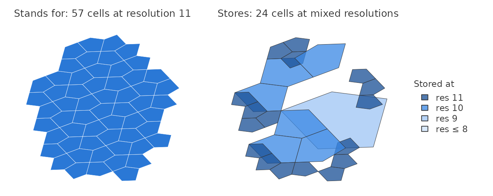
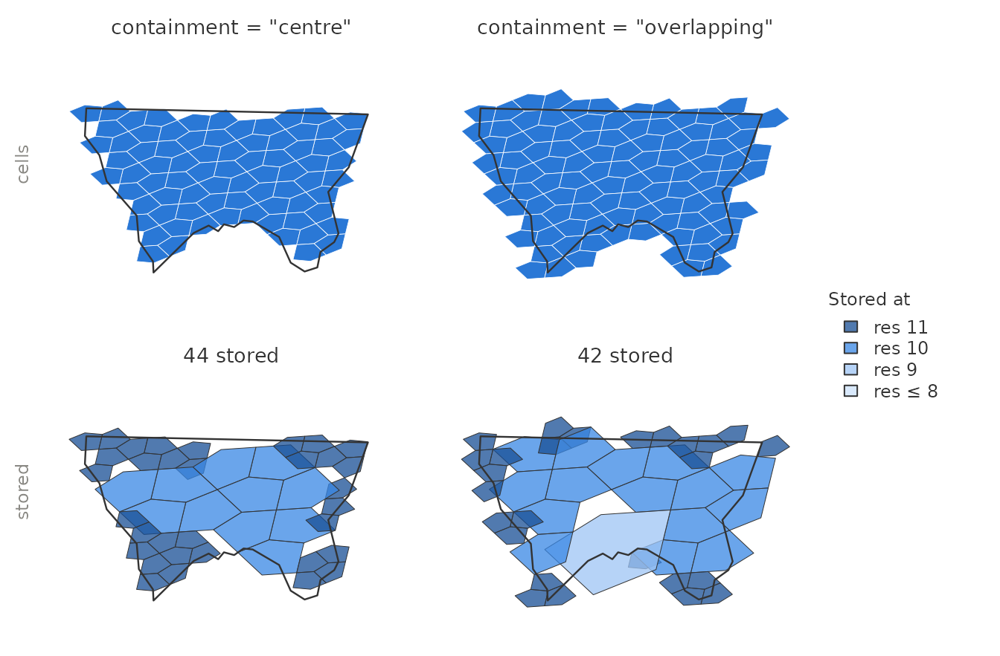
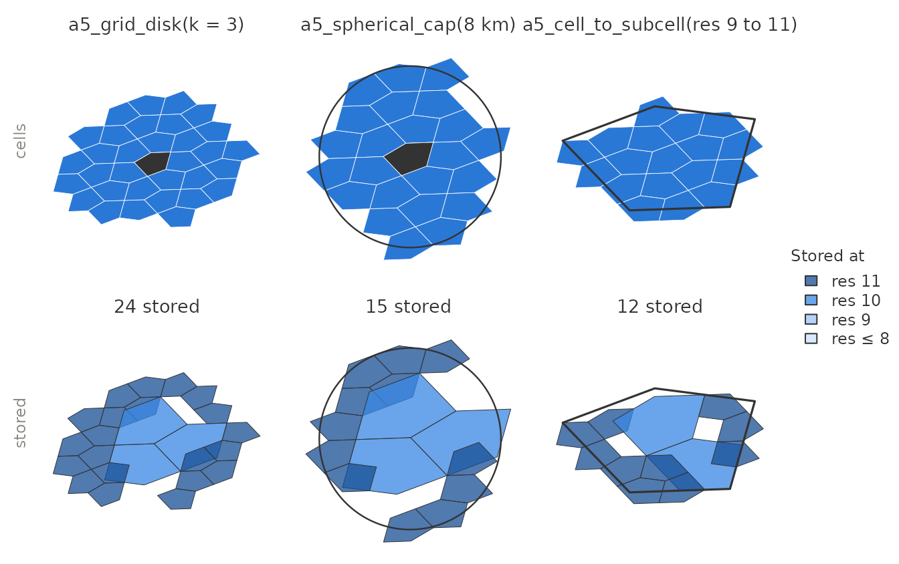
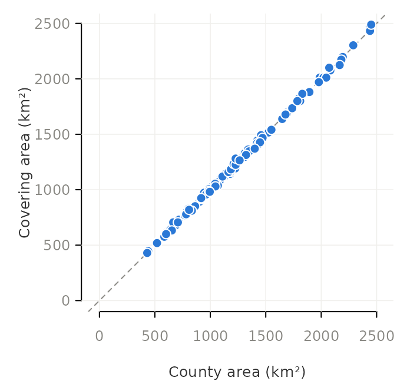
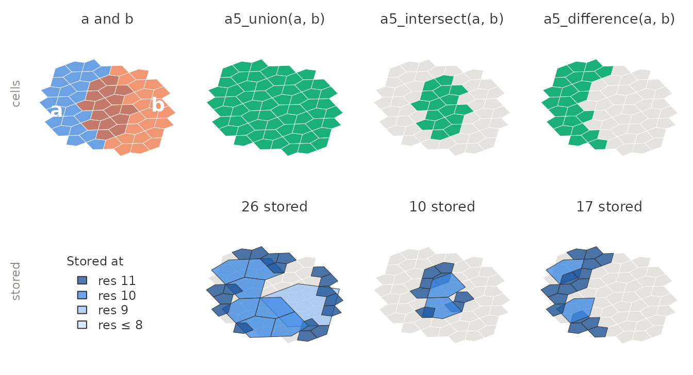
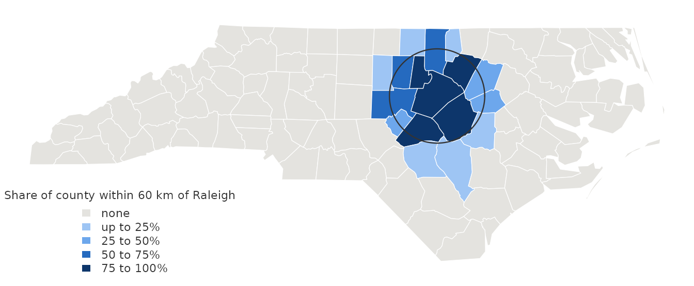
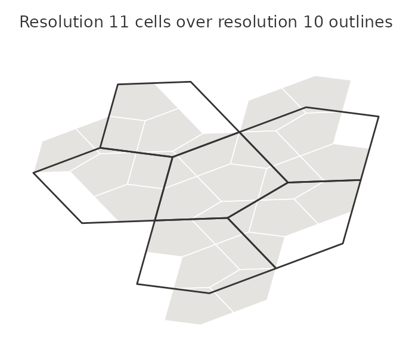
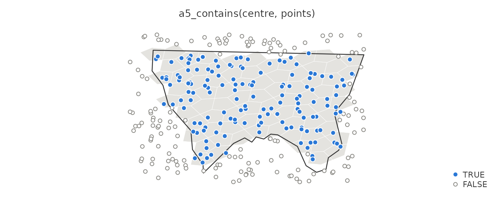
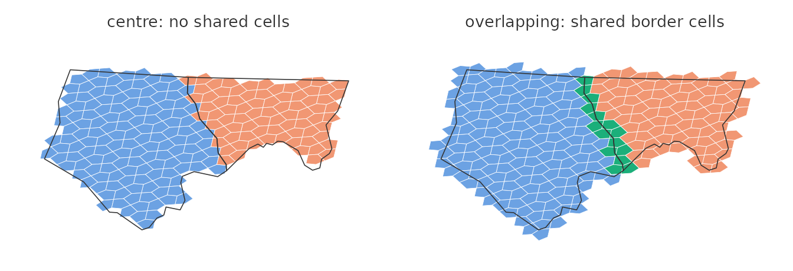

A covering is a set of A5 cells at one resolution that
stands for an area: the cells of a polygon, of a disk around a cell, or
of a cap of a given radius. An a5_covering vector holds one
covering per element, so coverings sit in a data frame column next to
the features they describe.
What a covering stores
A covering is stored compacted: every complete group of four sibling cells is replaced by their parent, and a trailing compaction marker records the resolution the stored cells stand for.
raleigh <- a5_lonlat_to_cell(-78.64, 35.78, resolution = 11)
cap <- a5_spherical_cap(raleigh, radius = 12000)
cap
#> <a5_covering[1]>
#> [1] res 11: 57 cells (24 stored)
The stored cells are parents in the A5 index, whose outlines do not
nest: drawn directly they overlap their neighbours and leave gaps.
Everything that combines, tests or measures coverings works on the
stored cells without expanding them, which keeps it fast for coverings
that stand for millions of cells. To draw a covering or join it to data
keyed by cell, expand it with a5_uncompact(), as the
figures here do. Where it helps, a second row shows what the same
covering stores.
Building coverings
a5_polygon_to_cells() returns one covering per feature.
By default a cell belongs when its centre lies inside the polygon;
containment = "overlapping" also takes every cell the
boundary touches, so the cells cover the polygon without gaps.
nc <- st_read(system.file("shape/nc.shp", package = "sf"), quiet = TRUE)
nc <- st_transform(nc, 4326) # A5 works in WGS 84 longitude and latitude
alleghany <- nc[nc$NAME == "Alleghany", ]
centre <- a5_polygon_to_cells(alleghany, resolution = 11)
overlapping <- a5_polygon_to_cells(alleghany, resolution = 11, containment = "overlapping")
c(centre, overlapping)
#> <a5_covering[2]>
#> [1] res 11: 77 cells (44 stored) res 11: 102 cells (42 stored)
The functions that start from a cell return one covering per centre
cell: a5_grid_disk() takes every cell within k
steps, a5_spherical_cap() every cell whose centre is within
a distance, and a5_cell_to_subcell() the finer cells whose
centres lie inside a coarser cell.
disk <- a5_grid_disk(raleigh, k = 3)
cap <- a5_spherical_cap(raleigh, radius = 8000)
coarse <- a5_cell_to_parent(raleigh, resolution = 9)
subcells <- a5_cell_to_subcell(coarse, resolution = 11)
a5_compact() turns any set of cells into a covering, and
as_a5_covering() builds coverings from cell lists or from
the stored form written by other A5 libraries.
Measuring coverings
a5_count() gives the number of cells a covering stands
for, and a5_area() its area. A5 cells are equal-area, so
the area is the count times the area of one cell. At resolution 11,
where a cell covers about 8 km², it tracks each county’s true area
closely:
nc$cells <- a5_polygon_to_cells(nc, resolution = 11)
nc$cell_area <- a5_area(nc$cells, units = "km^2")
head(nc[c("NAME", "cells", "cell_area")], 3)
#> Simple feature collection with 3 features and 3 fields
#> Geometry type: MULTIPOLYGON
#> Dimension: XY
#> Bounding box: xmin: -81.74091 ymin: 36.23397 xmax: -80.4351 ymax: 36.58973
#> Geodetic CRS: WGS 84
#> NAME cells cell_area
#> 1 Ashe res 11: 139 cells (55 stored) 1126.9112 [km^2]
#> 2 Alleghany res 11: 77 cells (44 stored) 624.2602 [km^2]
#> 3 Surry res 11: 176 cells (62 stored) 1426.8804 [km^2]
#> geometry
#> 1 MULTIPOLYGON (((-81.47258 3...
#> 2 MULTIPOLYGON (((-81.23971 3...
#> 3 MULTIPOLYGON (((-80.45614 3...
Each point is a county; the dashed line marks equal areas. The covering area is within 1% of the county’s for the median county and about 6% at worst, because each cell straddling a county boundary is in or out by its centre. Finer resolutions reduce the error.
Combining coverings
a5_union(), a5_intersect() and
a5_difference() combine coverings without expanding
them.
a <- a5_spherical_cap(a5_lonlat_to_cell(-78.72, 35.78, 11), radius = 10000)
b <- a5_spherical_cap(a5_lonlat_to_cell(-78.58, 35.78, 11), radius = 10000)
a5_union(a, b)
#> <a5_covering[1]>
#> [1] res 11: 62 cells (26 stored)
a5_intersect(a, b)
#> <a5_covering[1]>
#> [1] res 11: 16 cells (10 stored)
a5_difference(a, b)
#> <a5_covering[1]>
#> [1] res 11: 23 cells (17 stored)
The result of each operation is compacted again, so a covering that comes out of a union stores its merged interior as coarser cells.
They work element by element, recycling a length-one argument, so one
call intersects every county with a single cap. With one argument,
a5_union() merges every covering in a vector into one.
near_raleigh <- a5_spherical_cap(raleigh, radius = 60000)
nc$share_near <- a5_count(a5_intersect(nc$cells, near_raleigh)) / a5_count(nc$cells)
state <- a5_union(nc$cells)
state
#> <a5_covering[1]>
#> [1] res 11: 15,672 cells (1,356 stored)
Both coverings in each pair must be at the same resolution, or it is an error. A5 cells do not nest across resolutions: a resolution-11 cell can straddle the edge between two resolution-10 cells, so a set of cells at one resolution does not translate into a set at another.
a5_union(state, a5_spherical_cap(a5_cell_to_parent(raleigh), radius = 60000))
#> Error in `a5_union()`:
#> ! union failed for element 1: Cannot combine cells at resolution 11 with
#> cells at resolution 10
Testing coverings
a5_contains() tests cells against a covering. Indexing
points at the covering’s resolution turns it into a point-in-polygon
test, decided cell by cell: a point counts as inside when its cell
belongs to the covering.
set.seed(1)
lon <- stats::runif(300, -81.4, -80.9)
lat <- stats::runif(300, 36.35, 36.6)
points <- a5_lonlat_to_cell(lon, lat, resolution = 11)
inside <- a5_contains(centre, points)
table(inside)
#> inside
#> FALSE TRUE
#> 150 150
Near the county line the answer follows the cells, not the line: a point just outside it is inside when its cell’s centre is in the county, and the reverse.
a5_overlaps() tests whether two coverings share any
cell. With centre containment every cell belongs to the one county
holding its centre, so neighbouring counties never overlap. With
containment = "overlapping", cells along a shared border
belong to both:
pair <- nc[nc$NAME %in% c("Alleghany", "Ashe"), ]
by_centre <- a5_polygon_to_cells(pair, resolution = 11)
gap_free <- a5_polygon_to_cells(pair, resolution = 11, containment = "overlapping")
a5_overlaps(by_centre[1], by_centre[2])
#> [1] FALSE
a5_overlaps(gap_free[1], gap_free[2])
#> [1] TRUE
Shared cells are in aqua.
Drawing and joining
a5_uncompact() expands coverings to their cells.
simplify = FALSE keeps one element per covering, ready for
tidyr::unnest():
per_county <- a5_uncompact(nc$cells[1:3], simplify = FALSE)
lengths(per_county)
#> [1] 139 77 176Uncompacting can build a great many cells: a covering of France at
resolution 18 stands for about a billion. a5_uncompact()
refuses to build more than .Machine$integer.max cells; work
with the covering itself where possible.
Storing coverings
Coverings keep their compaction marker in storage, as in the other A5
libraries. a5_covering_to_arrow() writes them to an Arrow
list<uint64> column that DuckDB, Python and
JavaScript read with the resolution intact, and
a5_covering_from_arrow() reads them back, normalising
coverings written elsewhere. See vignette("arrow-parquet").
a5_is_valid() checks that a covering built by hand is well
formed.